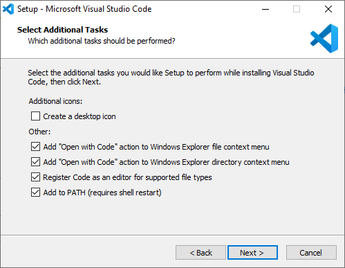
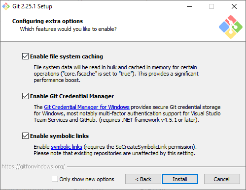

Installation
A complete installation for the workflow requires the following accounts to be created per member and the following software to be installed.
Requirements
Symlinks are disabled by default, so you should either turn on Developer Mode on Windows.
If and only if you know what you're doing, you may choose not to turn on Developer Mode and use UAC to enable symlinks for the default user.
Automatic* Download and Install
*Better BibTeX and the Zotero browser connector should be installed manually
Download the Installer here: SourceForge
Perl
Strawberry Perl will install itself first. Simply stick to the defaults and the procedure will be smooth.
Visual Studio Code
Visual Studio Code will install itself after.
Simply stick to the defaults and the procedure will be smooth.
Make sure that the Add to PATH option is checked as shown below:

Git Source Code Management (SCM)
Git will install itself after.
A requirement for the workflow is enabling symbolic links, which is disabled by default.
During the installation process remember to check the Enable symbolic links checkbox, as shown here:

MikTeX
MikTeX will install itself after. Simply stick to the defaults and the procedure will be smooth.
Zotero
Zotero will install itself after. Simply stick to the defaults and the procedure will be smooth.
You have to install Better BibTeX and the Zotero browser connector manually, and the instructions are included on the README file. In case you missed reading the README file, the steps are included here:
1) Launch Zotero
2) Go to "Tools > Install Browser Connector"
3) Install the connector on your regular browser
4) Go to Zotero again
5) Go to "Tools > Add-ons"
6) Click the Settings button and click on "Install Add-on from File"
7) Select "zotero-better-bibtex-5.2.20.xpi" inside the manual_install folder contained inside the installer folder.
More in-depth instructions are also included here and here.
Optional Software
Optional software is included in the Manual Downloads section
Finishing Up
When everything is finally installed, restart your computer to register the changes.